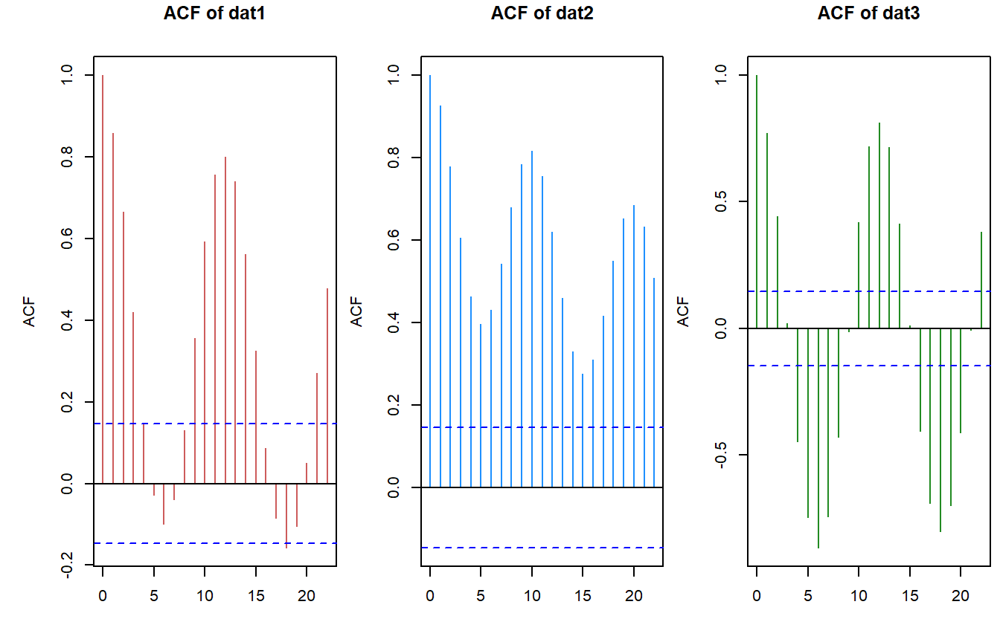
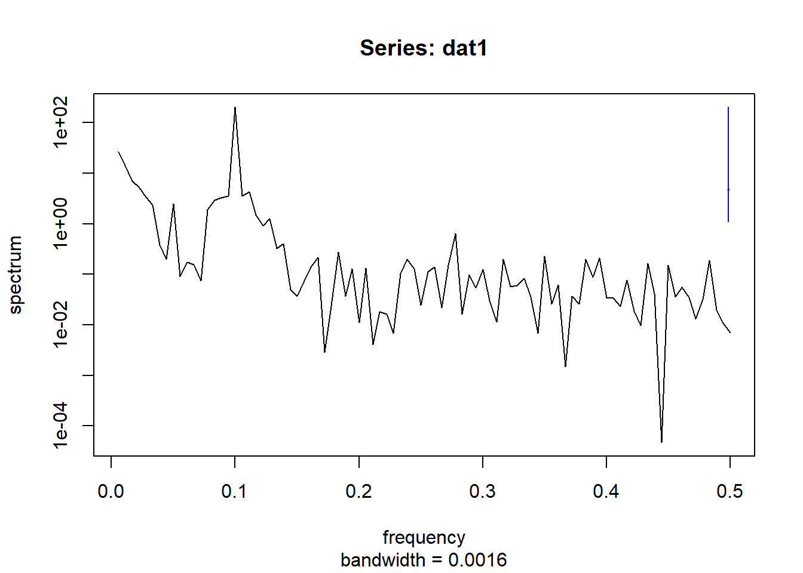
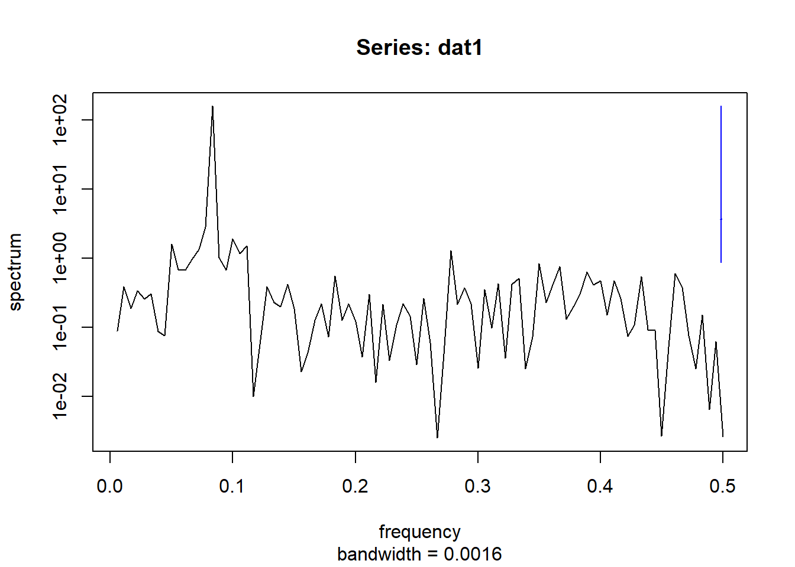
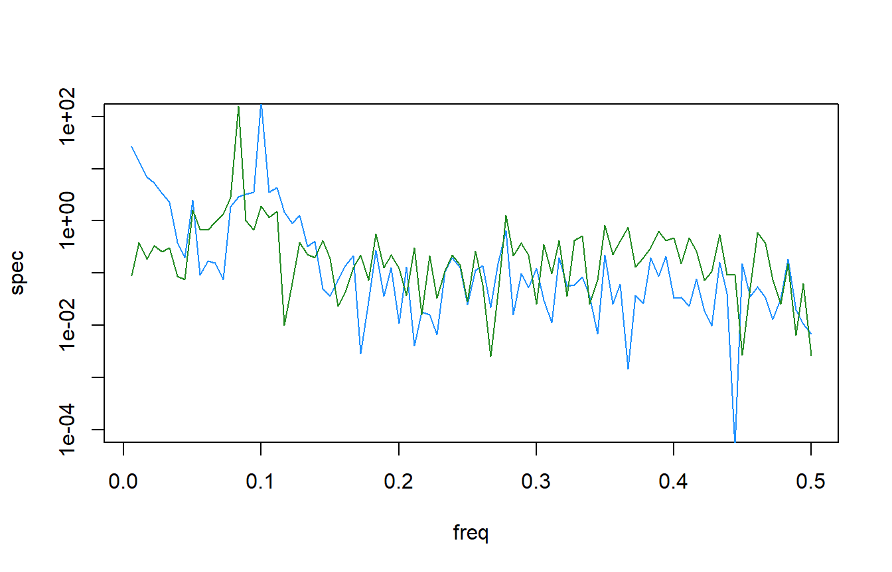
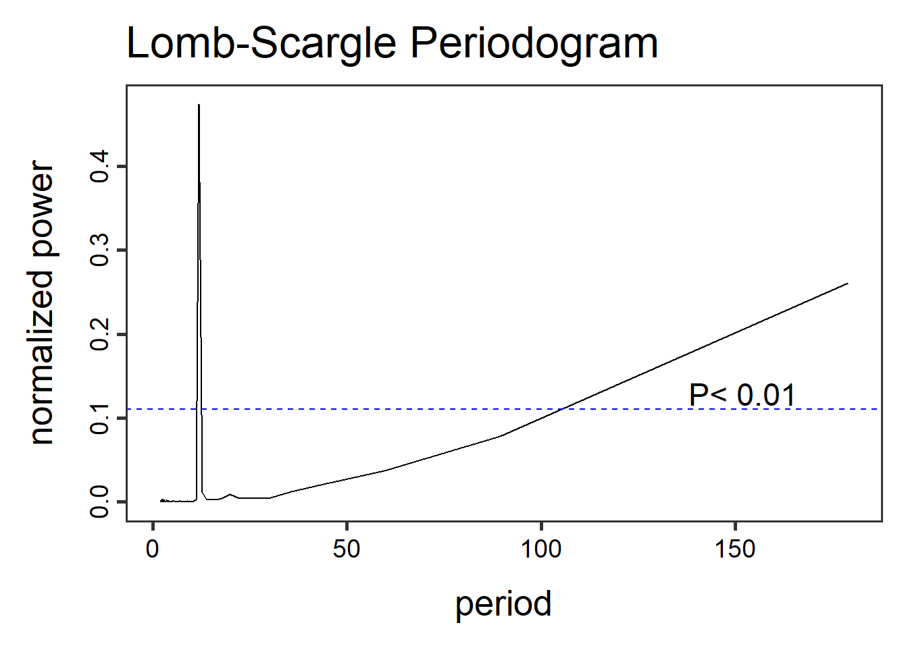
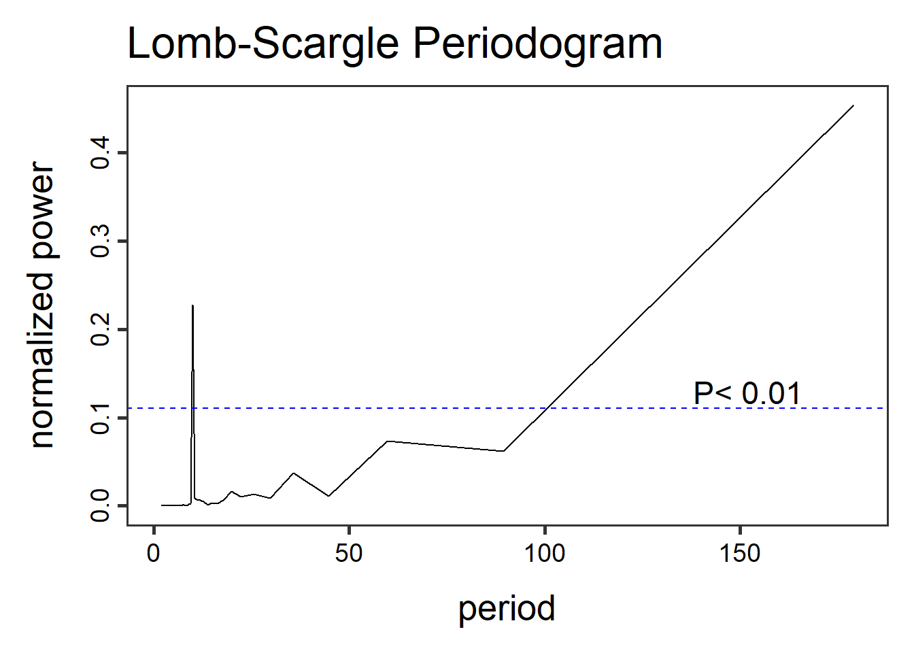
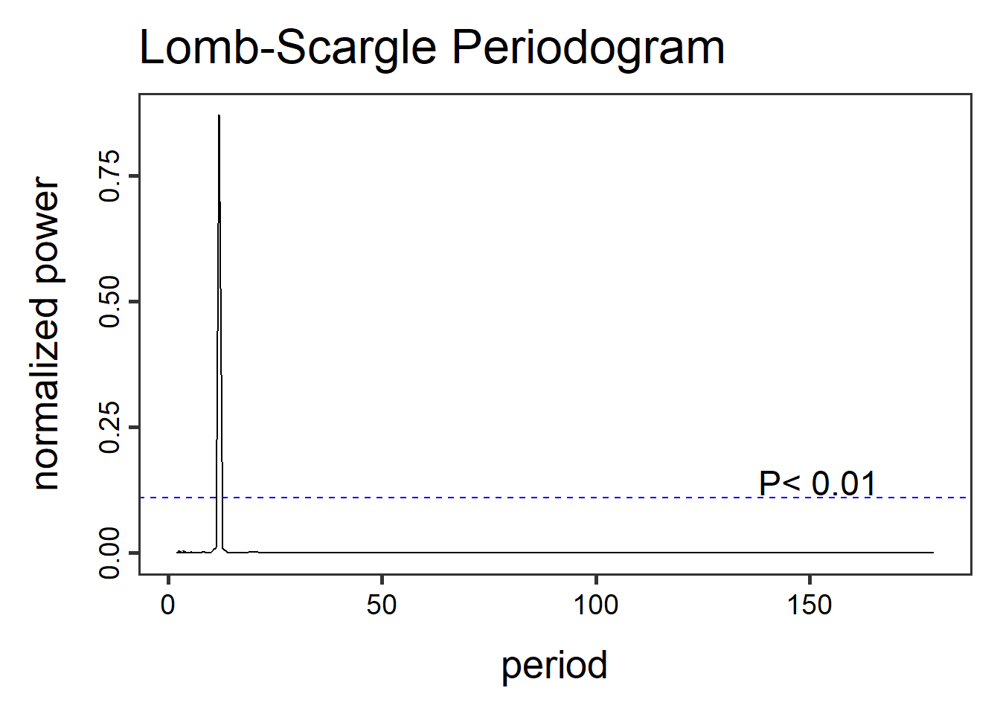

n.vals <- 15*12 # 15 years 12 months per year
dat1 <- simulate_timeseries(
n = n.vals, # About 15 years of monthly data
trend_slope = 0.025, # Upward trend
seasonal_amp = 2, # Seasonal fluctuation of ±2
seasonal_period = 12, # Monthly seasonality
noise_sd = 0.5, # Moderate noise
noise_mean = 3
)
## add some years and months
dat1$timeseries <- cbind(dat1$timeseries,
expand.grid(Mon = 1:12, Yr = 1990:2004)
)
dat1$timeseries$date <- with(dat1$timeseries,as.Date(paste(Yr,Mon,"01",sep="-")))
dat2 <- simulate_timeseries_vol(
n = n.vals, # About 15 years of daily data
trend_slope = 0.05, # Upward trend
seasonal_amp = 2, # Base seasonal amplitude
seasonal_period = 10, # Monthly seasonality
init_vol = 0.5, # Initial volatility
vol_persistence = 0.65,
rw_sd = 0.3
)
## add some years and months
dat2$timeseries <- cbind(dat2$timeseries,
expand.grid(Mon = 1:12, Yr = 1990:2004)
)
dat2$timeseries$date <- with(dat2$timeseries,as.Date(paste(Yr,Mon,"01",sep="-")))
dat3 <- simulate_timeseries(
n = n.vals, # About 15 years of monthly data
trend_slope = 0.001, # no trend
seasonal_amp = 2, # Seasonal fluctuation of ±2
seasonal_period = 12, # Monthly seasonality
noise_sd = 0.5, # Moderate noise
noise_mean = 3
)
## add some years and months
dat3$timeseries <- cbind(dat3$timeseries,
expand.grid(Mon = 1:12, Yr = 1990:2004)
)
dat3$timeseries$date <- with(dat3$timeseries,as.Date(paste(Yr,Mon,"01",sep="-")))Time series Analysis (Part IV), Stationarity and Peroidicity
blog
time series
stationarity
perodicity
Congrats, you made it to the fourth installment of the time-series analysis blog post series. So far we’ve gone over the basics of time series (Part I), minimum number of samples, power analyses and some basic trend analyses (Part II), and met the family … Kendall family that is (Part III) . In this post we will begin the discussion of time-series stationarity and periodicity, both of which are important considerations in time series forcasts, time-series decomposition and other analyses.
Time-series
Before we dig too deep into the definitions and tests associated with stationarity and periodicity lets simulate a dataset. If you remember in the first post of this series (Part I), I had a couple of functions put together to simulate a time-series.

Stationarity
You might see throughout the literature stationary and stationarity, one term is a definition and the other is a status. For instance a stationary time-series has statistical properties or moments that do not vary in time. These proprieties or moments refer to the mean, variance or covariance of a time-series. Therefore a stationary time-series is a constant mean, variance and autocorrelation. Stationarity, is therefore, the status of a time-series. These words and their antonyms (e.g. stationarity vs non-stationarity, stationary vs non-stationary) are scatter throughout the literature and used to represent the same things in one way or another. My word savy friends might be able to settle when or how to uses these variants, for now I’ll try to remain as consistent as possible.
To test for stationarity there are several statistical statistical tests and diagnostic tools are available.
Inspect the data, I know this seems basic but looking at the data will help you gauge the data qualitatively. See plots above.
Changes in mean and variance, given the definitions of stationarity looking at the changes in mean and variance over the time-series could provide insight into the structure of the data and any major shifts or changes. To do that we can look at the cumulative change or deviation in mean values, sometimes called the cusum. Another version of this is looking at the cumulative deviation within the dataset. Cusum with respect to mean is pretty straight forward, estimate the mean of a dataset and calculate the cumulative deviation from the mean.
## cusum (WRT mean)
dat1.mu <- mean(dat1$timeseries$value)
dat1.cusum <- cumsum(dat1$timeseries$value - dat1.mu)
dat2.mu <- mean(dat2$timeseries$value)
dat2.cusum <- cumsum(dat2$timeseries$value - dat2.mu)
dat3.mu <- mean(dat3$timeseries$value)
dat3.cusum <- cumsum(dat3$timeseries$value - dat3.mu)
Based on the deviation from mean and cusum plots you can see that there are some similarities and differences between time-series. With dat1 and dat2 given their generally increasing trends the deviation from the overall mean also increases, meanwhile dat3 is relatively constant. Simularly the cusum plots look similar for dat1 and dat2 with a big “U”, however the shape of the U is different between time-series. The bottom of “U” inidicates where in the time-series is the greatest deviation from the overall mean.
The cusum approach can also be applied to looking at changes in variance across the time-series. The approach is similar, the overall variance is calculated and compared to a squared deviance.
## cusum (WRT variance)
dat1.var <- var(dat1$timeseries$value)
dat1.sqdev <- (dat1$timeseries$value - dat1.mu)^2
dat1.cusum_variance <- cumsum(dat1.sqdev - dat1.var)
dat2.var <- var(dat2$timeseries$value)
dat2.sqdev <- (dat2$timeseries$value - dat2.mu)^2
dat2.cusum_variance <- cumsum(dat2.sqdev - dat2.var)
dat3.var <- var(dat3$timeseries$value)
dat3.sqdev <- (dat3$timeseries$value - dat3.mu)^2
dat3.cusum_variance <- cumsum(dat3.sqdev - dat3.var)
Changes in the cusum variance lines gives an indication of changes in variability over time within the time-series. Positive “trend” indicates increasing variability and vice-versa.
- Augmented Dickey-Fuller (ADF) Test, the ADF test checks for a unit root in the time-series, where the null hypothesis is that the series is non-stationary
library(tseries)
adf.test(dat1$timeseries$value)
Augmented Dickey-Fuller Test
data: dat1$timeseries$value
Dickey-Fuller = -14.195, Lag order = 5, p-value = 0.01
alternative hypothesis: stationaryadf.test(dat2$timeseries$value)
Augmented Dickey-Fuller Test
data: dat2$timeseries$value
Dickey-Fuller = -2.502, Lag order = 5, p-value = 0.3664
alternative hypothesis: stationaryadf.test(dat3$timeseries$value)
Augmented Dickey-Fuller Test
data: dat3$timeseries$value
Dickey-Fuller = -14.195, Lag order = 5, p-value = 0.01
alternative hypothesis: stationaryThese results suggest that both dat1 and dat3 are stationary datasets due to the low p-values. To some extent you can see that in the plots of the raw data with dat2 time-series looks like something changes towards the back end of the time-series.
- KPSS Test (Kwiatkowski-Philips-Schmidt-Shin), this test complements the ADF test
kpss.test(dat1$timeseries$value,null = "Trend")
KPSS Test for Trend Stationarity
data: dat1$timeseries$value
KPSS Trend = 0.010153, Truncation lag parameter = 4, p-value = 0.1kpss.test(dat2$timeseries$value,null = "Trend")
KPSS Test for Trend Stationarity
data: dat2$timeseries$value
KPSS Trend = 0.19067, Truncation lag parameter = 4, p-value = 0.0195kpss.test(dat3$timeseries$value,null = "Trend")
KPSS Test for Trend Stationarity
data: dat3$timeseries$value
KPSS Trend = 0.010153, Truncation lag parameter = 4, p-value = 0.1At first glance you would think these results are giving contradictory results. This is where understanding the null hypothesis comes in handy. With the KPSS test, when p-values are low (i.e. <0.05) they indicate the time-series is non-stationary while high p-values suggest stationary time-series. Therefore the KPSS results are consistent with the ADF results.
Both the ADF and KPSS tests assess data for stationarity by evaluating the unit-root) but they differ fundamentally in their hypotheses and objectives.
- ADF Test
- Null hypothesis (\(H_0\)): The time series has a unit root (i.e. it is non-stationary).
- Goal: Test for the presence of a unit root (non-stationarity).
- KPSS Test
- Null hypothesis (\(H_0\)): The time series is stationary (trend-stationary or level-stationary).
- Goal: Test for stationarity.
There are ways to make non-stationary time-series stationary by using differencing methods, however in most cases (in my field) these methods remove some of the fundamental information from the dataset and make interpretation and “back”-calculating difficult.
Periodicity
Periodicity can be defined as the frequency at which observations occur in a time-series. As with everything there are a couple different ways to assess periodicity.
- Autocorrelation Function (ACF), the most basic look at a time-series, aside from just plotting the data is looking at the autocorrelation of the data. The ACF can reveal periodicity and if there are significant correlations at regular lags then this could qualtatively indicate that time-series has periodic cycles.
acf(dat1$timeseries$value)
acf(dat2$timeseries$value)
acf(dat3$timeseries$value)
The ACF plots present the degree of autocorrelation (i.e. correlation coefficient) of the data. The horizontal blue dashed line is the approximate line indicating significant correlations. Based on this first look we can see that each time-series has some degree of periodicity.
- Fourier Transform / Periodogram A periodogram or spectral density plot will show the relative strength of different frequencies (periodicities) in a given time-series. The
spectrumfunction is in base R and will provide a plot with results “hidden”. If you give it a variable name it will store the output as an object. (i.e.test1 <- spectrum(...)).
spectrum(dat1$timeseries$value,main = "Series: dat1")spectrum(dat2$timeseries$value,main = "Series: dat1")
spectrum(dat3$timeseries$value,main = "Series: dat1")
Here is a comparison of the different time-series

Interestingly, the combined spectral density plot shows that dat1 and dat3 have identical spectral densities. Which makes sense if you go back to how the data was simulated. The only difference in the function was trend_slope value which made dat3 a much more flat time-series.
- Lomb-Scargle Periodogram, a method similar to fourier transformations, the Lomb-Scargle periodgrams fits a sinusoidal model to each frequency. This method can be applied to time-series with regular and irregular sampling intervals (periodicity).
library(lomb)
dat1.lsp_result <- lsp(dat1$timeseries$value,type= "period")
dat2.lsp_result <- lsp(dat2$timeseries$value,type= "period")
dat3.lsp_result <- lsp(dat3$timeseries$value,type= "period")
Other functions in the lomb library can help visualize and extract information like getpeaks(...) and summary(...). There is a lot more to this method and package than we can dedicate here, therefore I encourage exploration of this package and method.
Whats next?
Now that we have a basic understanding of these components, combined with what we’ve learned so far about time-series analysis. The next post will cover time series decomposition. Stay tuned.
Session Info
- Session info ---------------------------------------------------------------
setting value
version R version 4.1.0 (2021-05-18)
os Windows 10 x64 (build 26100)
system x86_64, mingw32
ui RTerm
language (EN)
collate English_United States.1252
ctype English_United States.1252
tz America/New_York
date 2026-01-06
pandoc 2.19.2
quarto 1.3.450
- Packages -------------------------------------------------------------------
package * version date (UTC) lib source
AnalystHelper * 0.2.0 2025-11-17 [] local
lomb * 2.5.0 2024-03-26 [] CRAN (R 4.1.0)
sessioninfo * 1.2.2 2021-12-06 [] CRAN (R 4.1.3)
tseries * 0.10-53 2023-01-31 [] CRAN (R 4.1.3)
------------------------------------------------------------------------------